JDBC son las siglas en ingles de Java Database Connectivity. Es un conjunto de clases que nos permite acceder a diversos gestores de bases de datos en forma transparente.
Veremos como conectarnos con el motor de base de datos MySQL.
Instalación de MySQL integrado en el WampServer
Utilizaremos esta herramienta en lugar de descargar solo el MySQL con la finalizar de facilitar la instalación y configuración del motor de base de datos (la instalación de esta herramienta es sumamente sencilla), además utilizaremos otra software que provee el WampServer que es el PhpMyAdmin que nos facilitará la creación de la base de datos.
Procedemos a descargar el WampServer de la siguiente página: aquí.
Luego de descargarlo procedemos a ejecutar el instalador:
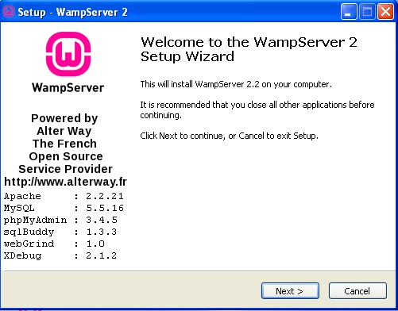Aceptamos los términos y condiciones:

Elegimos el directorio donde se instalará":
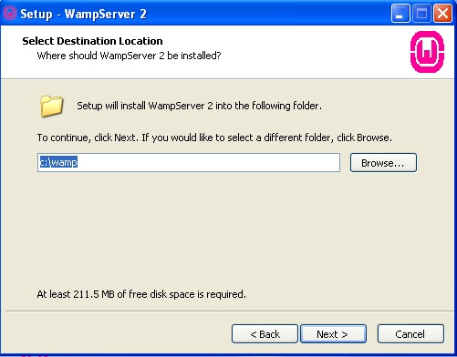Indicamos si queremos que se cree un ícono en el escritorio:
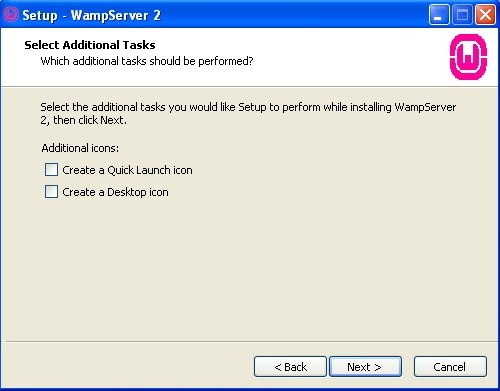Procedemos a presionar el botón "Install":
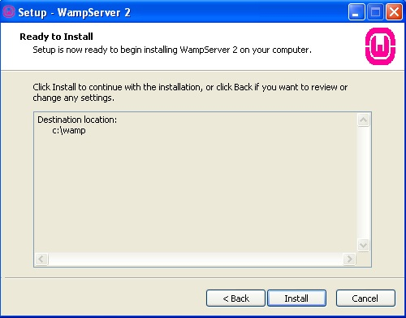Luego de instalarse nos solicita que navegador abrirá por defecto cuando ejecutemos el PhpMyAdmin (para la creación de la base de datos de MySQL):

En el siguiente diálogo dejamos los datos por defecto:

Finalmente aparece el diálogo final donde se nos informa que se iniciará el WampServer (es decir que se cargará en memoria entre otras cosas el MySQL) :
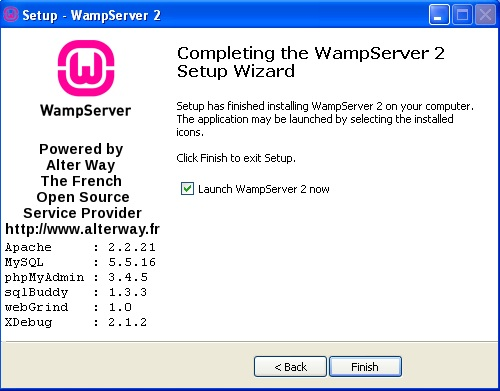Ahora podemos ver el iconos del WampServer en la bandeja del sistema de Windows (si se encuentra en color verde significa que el MySQL está ejecutándose correctamente):
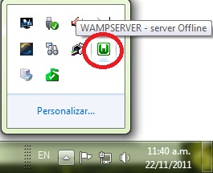Ejecución del PhpMyAdmin para la creación de la base de datos.
Haciendo clic sobre el ícono de la bandeja del sistema aparece un menú que nos permite lanzar el PhpMyAdmin para crear la base de datos de MySQL:
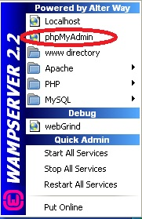El PhpMyAdmin es un programa web que nos permite administrar las bases de datos del MySQL:

Seleccionamos la pestaña "Base de datos" y donde dice "Crear nueva base de datos" especificamos que nuestra base de datos se llamará "bd1":
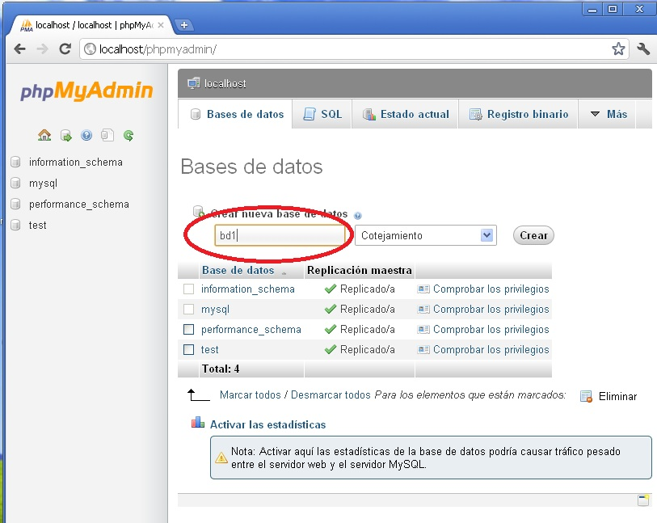Presionamos el botón "crear" y con esto ya tenemos nuestra base de datos creada:
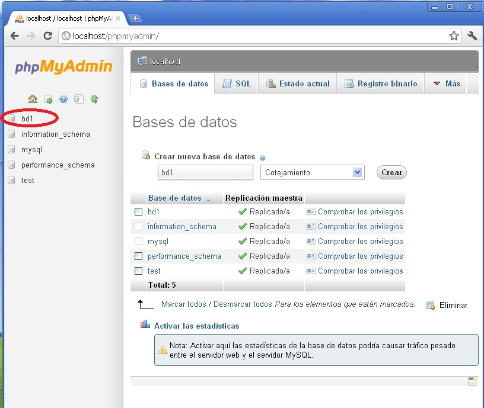Luego de seleccionar la base de datos "bd1" que figura a la izquierda procedemos a crear la primer tabla que contendrá (crearemos una tabla llamada "articulos" y que tendrá tres campos):
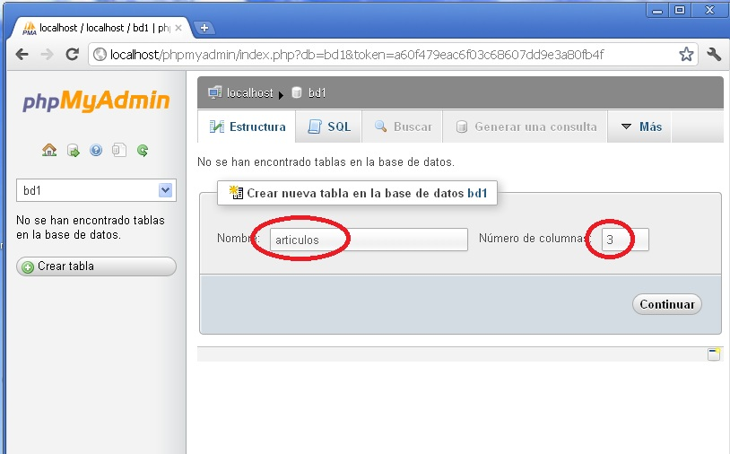En la tabla "articulos" definimos el campo "codigo" de tipo int (este campo será el "primary key" y auto_increment lo tildamos para que el código se genere automáticamente), el segundo campo es la descripción que es de tipo varchar con un máximo de 50 caracteres y por último el campo precio que es de tipo float.
Luego de especificar los tres campos en la parte inferior de la misma ventana aparece un un botón llamada "Guardar" para confirmar la estructura de la tabla:
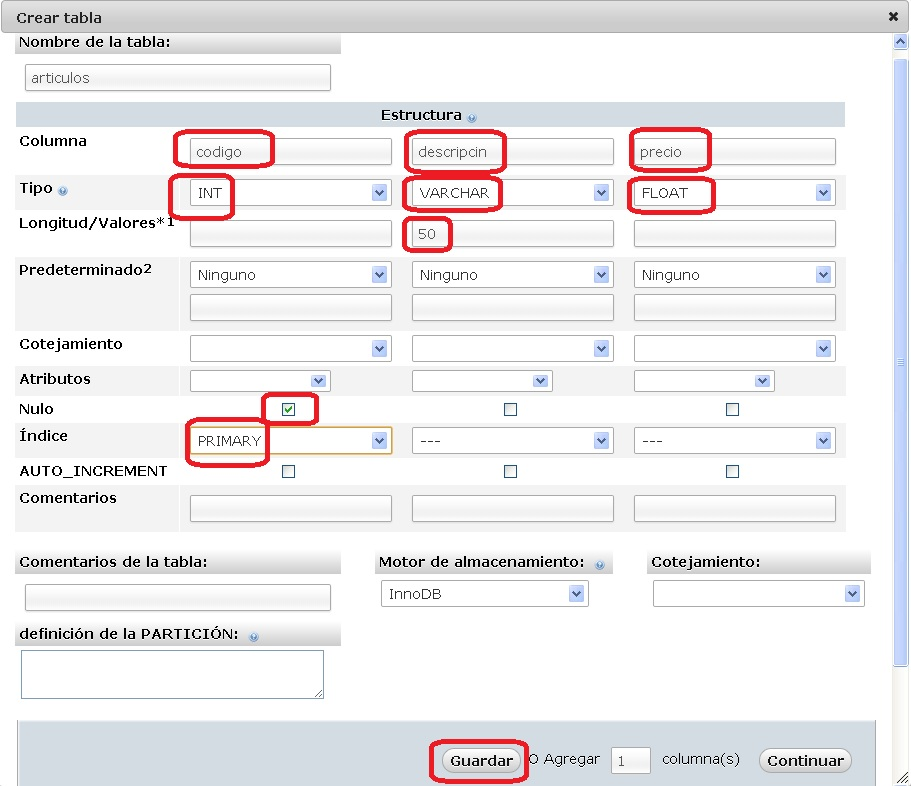En el lado izquierdo del navegador podemos ver ahora que la base de datos "bd1" tiene una tabla llamada "articulos"
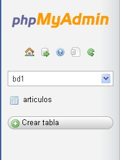Hasta acá lo que nos ayuda el PhpMyAdmin (es decir creación de la base de datos y la tabla), de ahora en más todas las otras actividades las desarrollaremos desde nuestro programa en java (poblar o insertar datos, listar registros, consultar, modificar y borrar datos)
Descarga del Driver para permitir conectar nuestro programa Java con el MySQL
Como última actividad de configuración previo a implementar los programas en Java para acceder a MySQL es la descarga del Driver que nos permita conectarnos con la base de datos.
El Driver lo podemos descargar de la página:aquí
Podemos descomprimir el archivo mysql-connector-java-5.1.18.zip que acabamos de descargar. Luego veremos que en nuestro programa en java haremos referencias al archivo mysql-connector-java-5.1.18-bin.jar (que es el Driver propiamente dicho)